BS Information Technology Student
Holy Cross of Davao College
An aspiring IT professional passionate about transforming theoretical knowledge into practical solutions. This portfolio showcases my academic journey, skills development, and insights gained from industry exposure.
Key takeaways from the Cebu-Bohol Educational Tour 2025
Real-world application of agile methodologies and professional software development workflows that differ from classroom simulations.
Better understanding of why we learn specific SDLC models and how they're adapted in actual development environments.
Communication and collaboration dynamics in tech companies, emphasizing teamwork and client interaction.
Recognized the importance of soft skills alongside technical abilities for successful IT careers.
Emerging technologies and tools being used in Philippine IT companies, from enterprise solutions to educational tech.
Motivated to explore new technologies and understand how classroom fundamentals apply to modern tools.
Diverse career paths in IT beyond traditional programming roles, including consulting, project management, and technical support.
Helped shape my career goals and identify areas for specialization within the BSIT program.
Transforming Perspective Through Experience
The educational tour transformed my perspective on IT careers. Seeing professionals apply concepts I've learned in classes like Software Engineering and Database Management made my studies more meaningful.
The tour reinforced that technical skills must be complemented by problem-solving abilities and effective communication.
Technical and professional skills gained from academic and tour experiences
HTML, CSS, JavaScript, React basics
MySQL, ERD Design, Normalization
Java, Python fundamentals, Algorithms
Requirement gathering, UML diagrams
Enhanced through tour interactions and presentations
Developed through group projects and tour activities
Strengthened by analyzing real-world IT challenges
Improved through balancing academics and tour participation
Bridging Theory and Practice
The educational tour significantly enhanced my understanding of how theoretical skills apply in industry settings:
became tangible when I saw enterprise database systems in action
made more sense after observing agile development teams
improved through interactions with IT professionals
grew by experiencing workplace environments
Detailed observations and learnings from all company visits during the Cebu-Bohol Tour
This visit provided insight into how IT companies serve as strategic partners to businesses. Seeing the scale of enterprise solutions helped me understand the importance of reliability and scalability in professional IT services.
This visit made my Software Engineering class more relevant. Seeing real teams use Scrum and agile practices showed me why we study these methodologies. The collaborative atmosphere was inspiring and gave me a clear picture of what to expect in my future career.
As someone who struggled with programming initially, I appreciated seeing how educational technology can make learning more engaging. This visit sparked ideas for my own projects and showed me how technology can be used to solve educational challenges.
Mata Technologies showed me the importance of innovation in the tech industry. The visit highlighted how companies need to continuously evolve and adapt to stay competitive. This reinforced my understanding of why we need to keep learning new technologies throughout our careers.
This visit was particularly meaningful as it showed how IT skills can directly impact community safety and well-being. Seeing technology used for emergency response gave me a new perspective on how IT professionals can contribute to society beyond commercial applications.
A visual journal documenting observations and learning experiences from the Cebu-Bohol Tour 2025
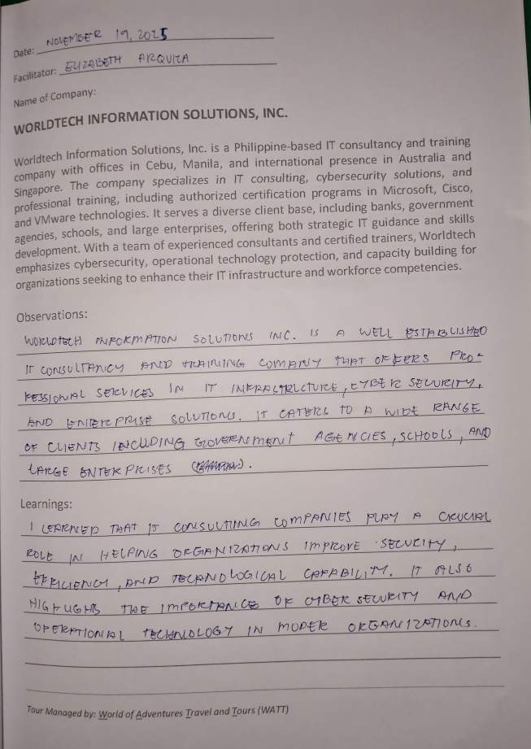
Learning about enterprise IT solutions and services
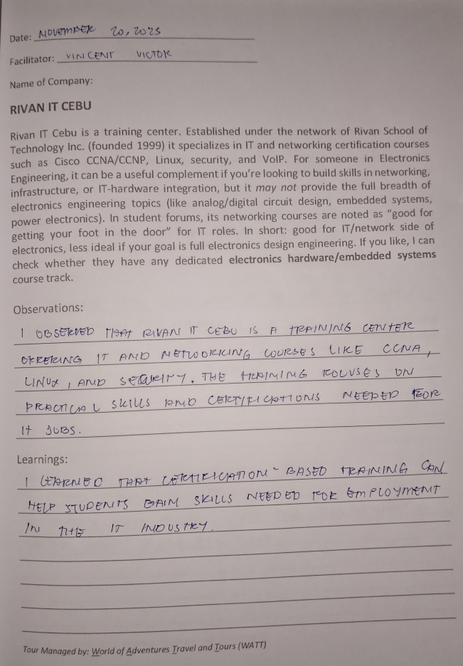
Hands-on session learning about agile development practices
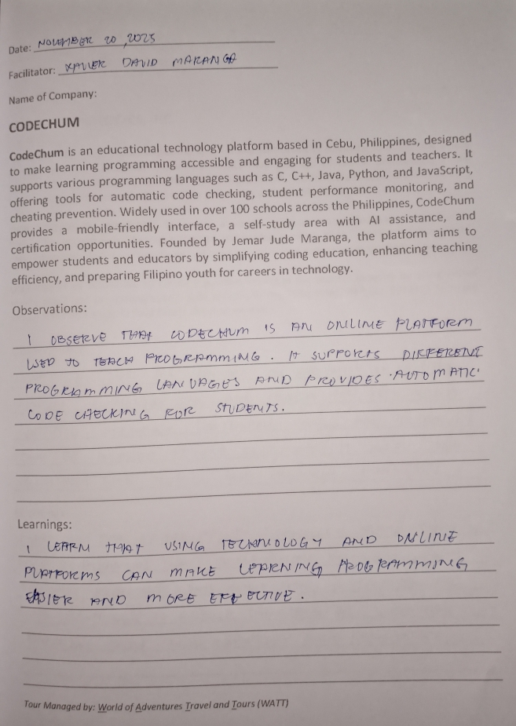
Interactive programming learning experience
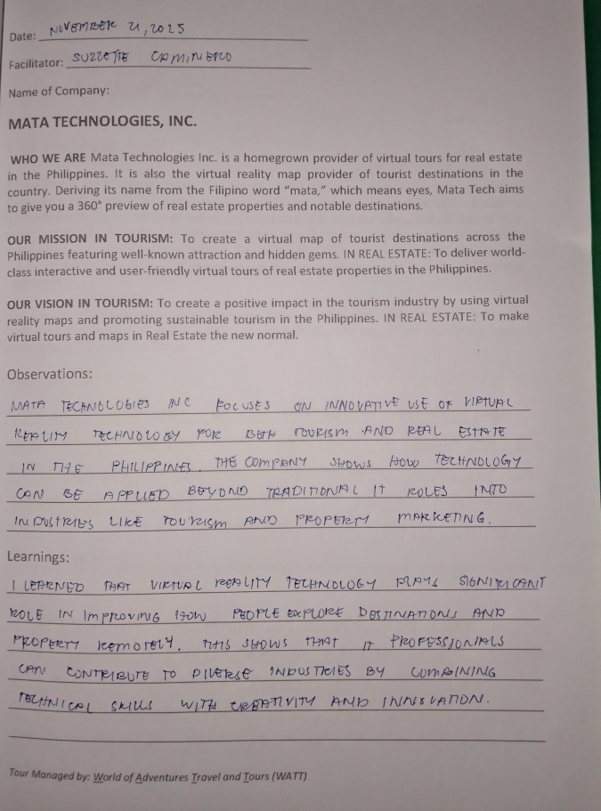
Interactive programming learning experience
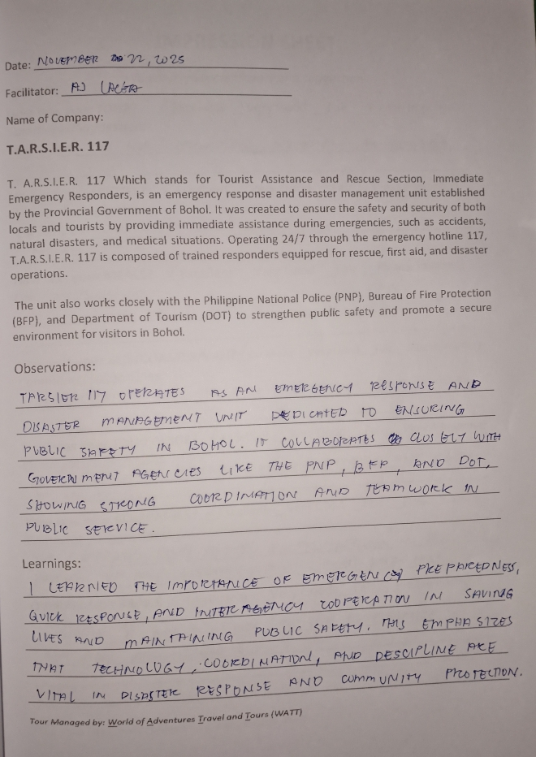
Understanding emergency response technology
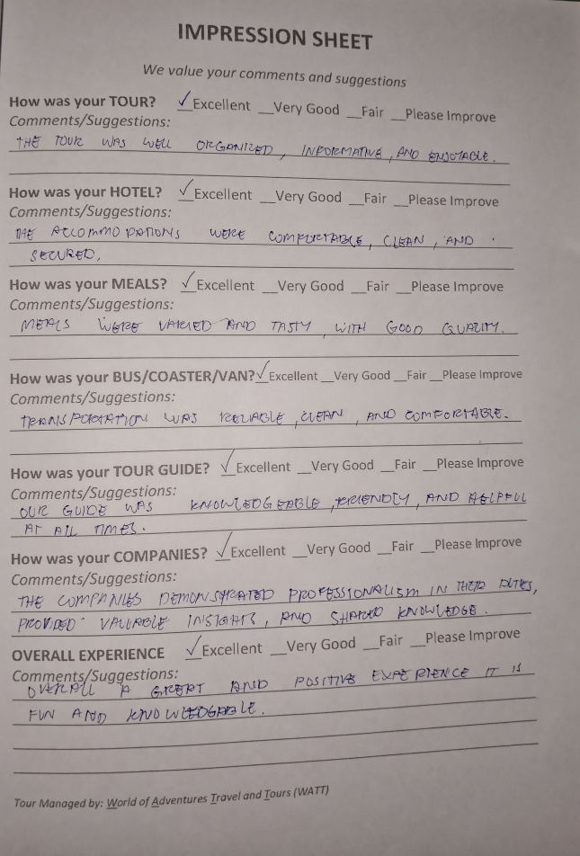
Understanding emergency response technology
These documented photos serve as visual reflections of my observations and learnings from the companies we visited during the tour.
Memorable moments and learning experiences captured during the Cebu-Bohol Educational Tour
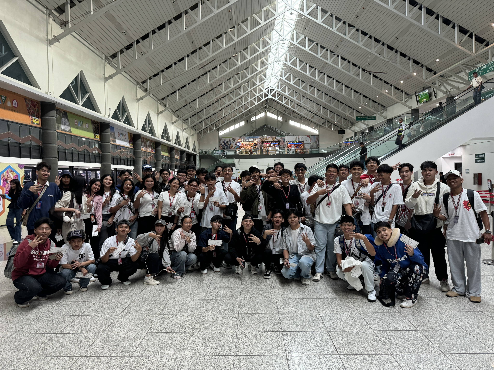
Excited start of the educational journey
Davao → Cebu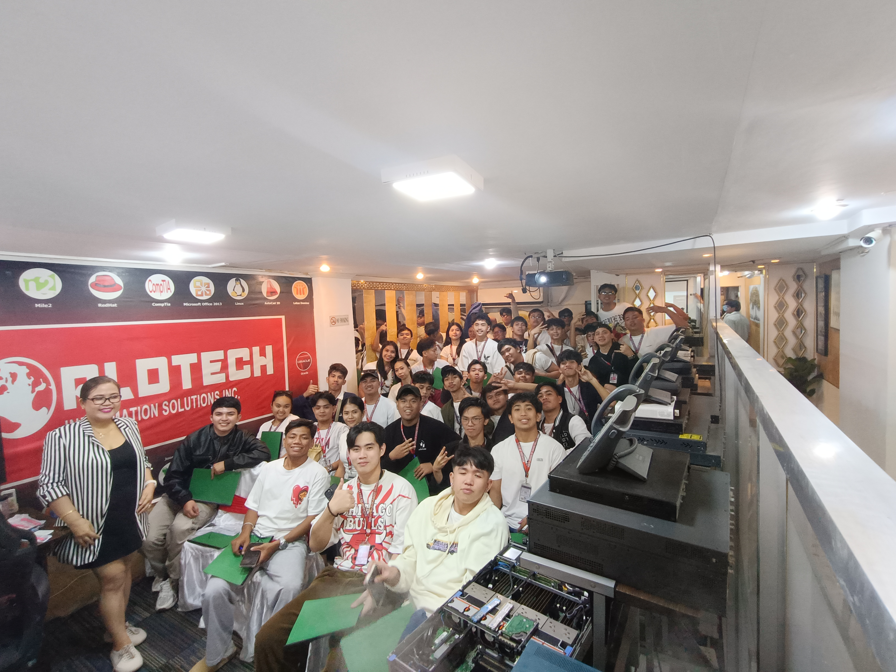
Enterprise IT solutions and services
Cebu City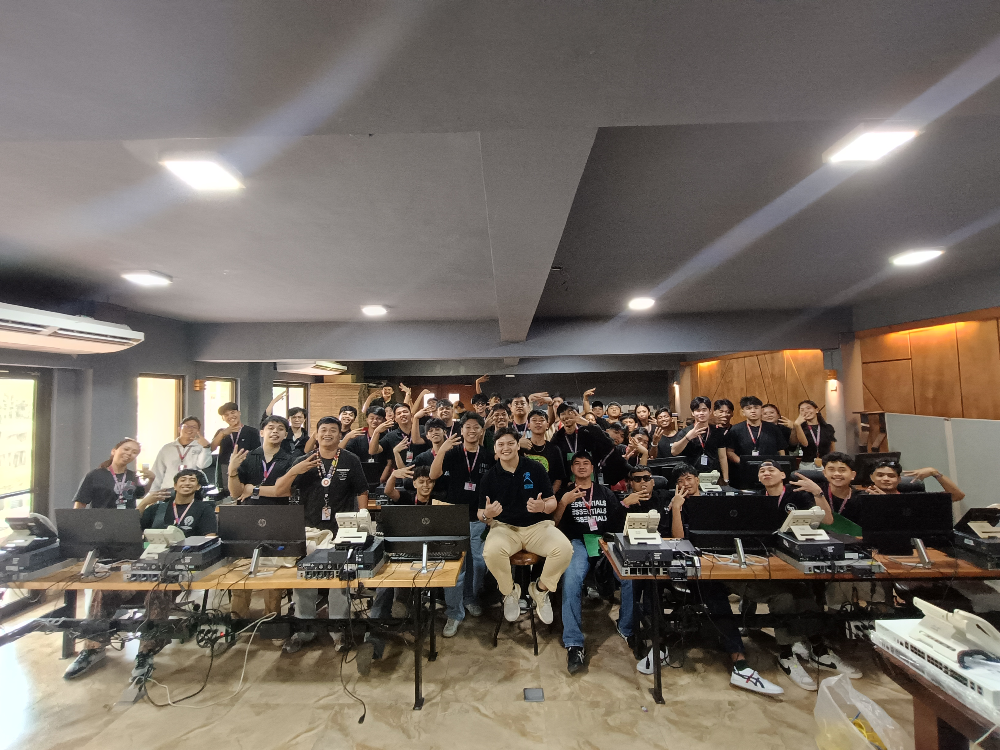
Agile development environment
Cebu IT Park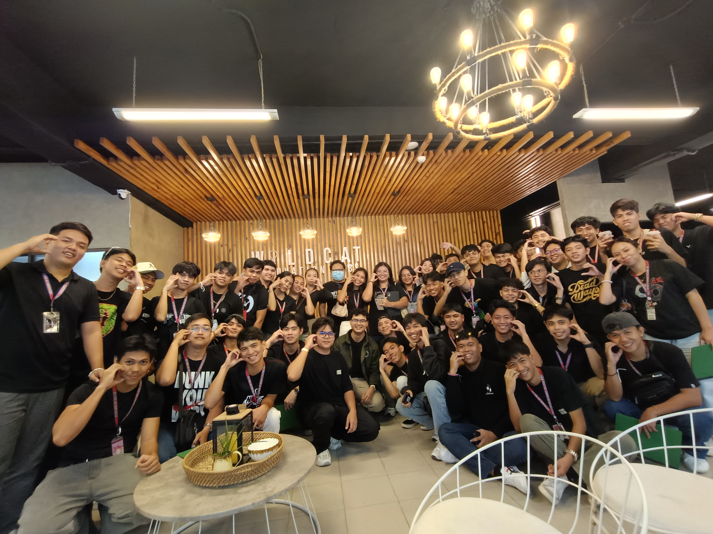
Educational technology platform
Cebu Business Park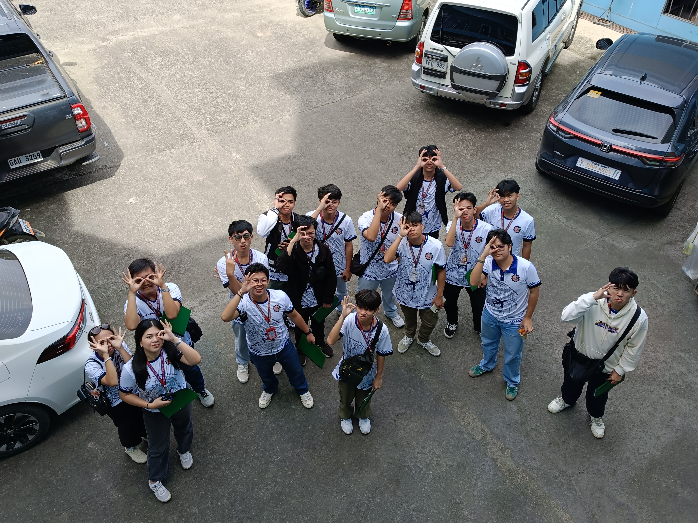
Innovative technology solutions
Cebu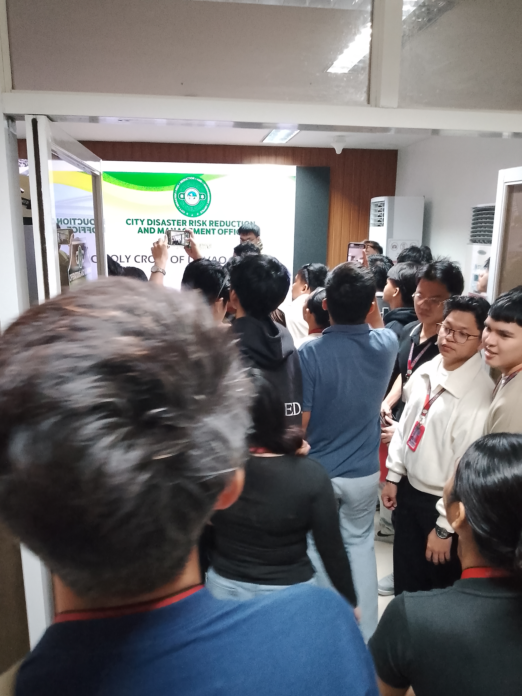
Emergency response technology
BoholThese photos document our journey from departure, through our first company visit, and all the way to the last company we visited during the Cebu–Bohol tour. Each image captures memorable moments and experiences, making these photos truly unforgettable.
These are the certificates I received throughout my journey and during the Cebu-Bohol Educational Tour 2025
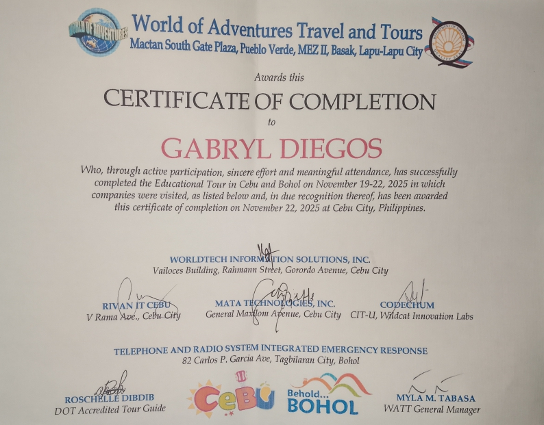
Award: Successful completion of Cebu-Bohol Educational Tour 2025
Issued by: Holy Cross of Davao College - IT Department
Date: November 22, 2025
Details: Recognizes active participation in all company visits and educational workshops
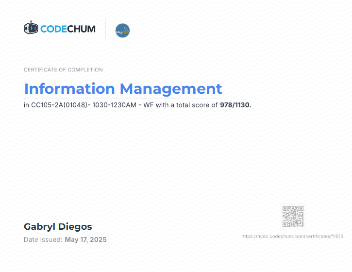
Award: Completion of Information Management in CC105 CodeChum
Issued by: CodeChum
Date: May 17, 2025
Details: Successful completion of information management
These certificates represent significant milestones in my academic journey and professional development. Each one symbolizes dedication, learning, and growth in the field of Information Technology.